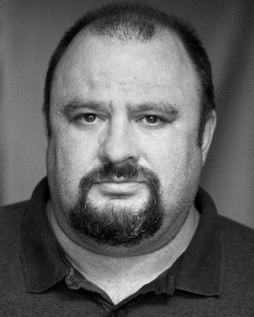

#11318 Die Frau in Schwarz
Alternativ: The Woman in Black (Englischer Titel)

 IMDB-Wertung: 6.4 / 10
IMDB-Wertung: 6.4 / 10  Metascore: 62
Metascore: 62 
Der junge Anwalt Arthur Kipps arbeitet Mitte des 19. Jahrhunderts in einer kleinen Londoner Kanzlei. Eines Tages bekommt er von seinem Chef den Auftrag, in das Dorf Crythin in Nordengland zu reisen, um dort den Nachlass einer kürzlich verstorbenen Klientin zu regeln. Auf dieser Reise lernt er Samuel Daily kennen. Dieser warnt ihn, sich nicht alleine in das verlassene Haus im Marschland zu begeben. Aber Kipps schlägt die gut gemeinten Ratschläge allesamt in den Wind und ignoriert auch die Andeutungen der Dorfbewohner, die an einen mysteriösen Geist auf dem Anwesen glauben. Auf der Beerdigung der Verstorbenen begegnet er einer Frau in schwarz, die nur er zu sehen scheint. Seltsame Dinge passieren ab diesem Zeitpunkt, und so langsam fängt auch er an, sich über manche Vorkommnisse zu wundern. Unbeirrt will er seinen Auftrag schnell erledigten und quartiert sich dafür im Haus der Verstorbenen ein. Ein Vorhaben, das er schon in der ersten Nacht zu bereuen beginnt…
Jahr: 2012
Dauer: 95 Minuten
FSK: 16
Land: England Studio: Concorde FilmverleihTonspuren: DTS - ,
Untertitel: Deutsch,
Auflösung: 1080p (1920x816) Größe: 4423 MB
Genre: Thriller, Horror, Drama, Fantasy
Regisseur: James Watkins
Drehbuch: Susan Hill, Jane Goldman
Soundtrack: Marco Beltrami
Darsteller:
 Daniel Radcliffe als Arthur Kipps
Daniel Radcliffe als Arthur Kipps Ciarán Hinds als Sam Daily
Ciarán Hinds als Sam Daily- Mary Stockley als Mrs. Fisher
-  Victor McGuire als Gerald Hardy
- Cathy Sara als Mrs. Jerome
 Liz White als Jennet
Liz White als Jennet Janet McTeer als Mrs. Daily
Janet McTeer als Mrs. Daily- Jessica Raine als
 Roger Allam als
Roger Allam als  Shaun Dooley als
Shaun Dooley als - Alfie Field als
- Alisa Khazanova als
- David Burke als
- Sidney Johnston als
 Neil Broome als
Neil Broome als - Lu Corfield als
 Paul J. Dove als
Paul J. Dove als - John R. Walker als
- Emma Shorey als Fisher Girl
- Molly Harmon als Fisher Girl
- Ellisa Walker-Reid als Fisher Girl
- Sophie Stuckey als
- Misha Handley als Joseph Kipps
- Lucy May Barker als
- Indira Ainger als
- Andy Robb als
- Alexia Osborne als Victoria Hardy
- William Tobin als
- Tim McMullan als
- Daniel Cerqueira als
- Ashley Foster als
- Aoife Doherty als
- Dennis Hewitt als
- Angela Jobson als
- Steve Munroe als
- Chloe Page als
- Warren Rushton als
- Lee Steele als
- Jonathan Taylor als
- Patricia Winker als
Datei: X:\2-Dilogie(A-F)\Frau in Schwarz\Frau in Schwarz, Die (2012, FSK16, 1920x816).mkv seit 18.06.2019
Festplatte: HD Collection-2(A-Z)-3(A-M)
 Alle Filme aus Gruppe '2-Dilogie(A-F)\Frau in Schwarz'
Alle Filme aus Gruppe '2-Dilogie(A-F)\Frau in Schwarz'